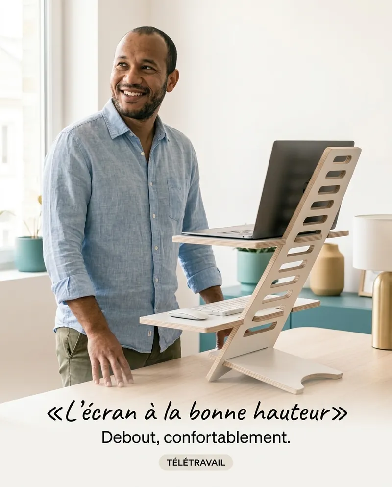
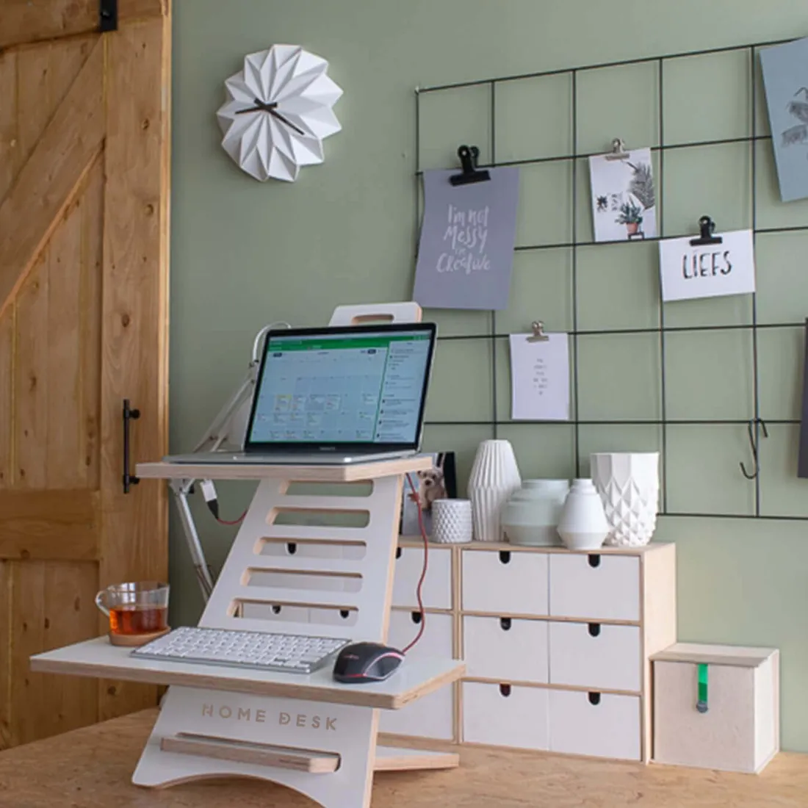
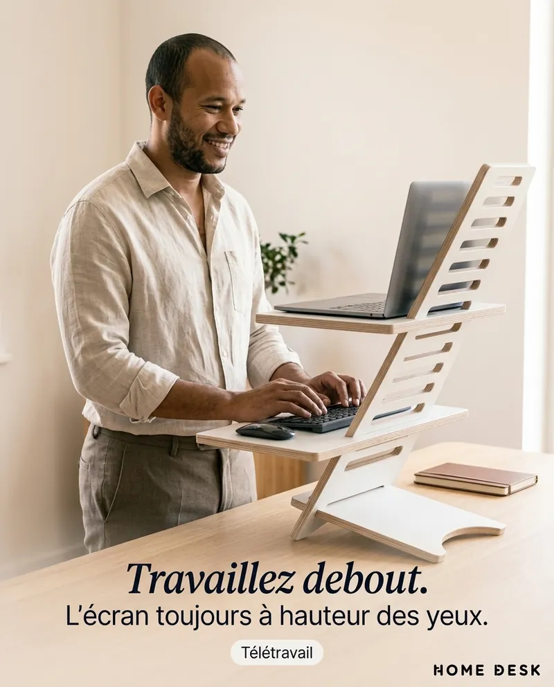
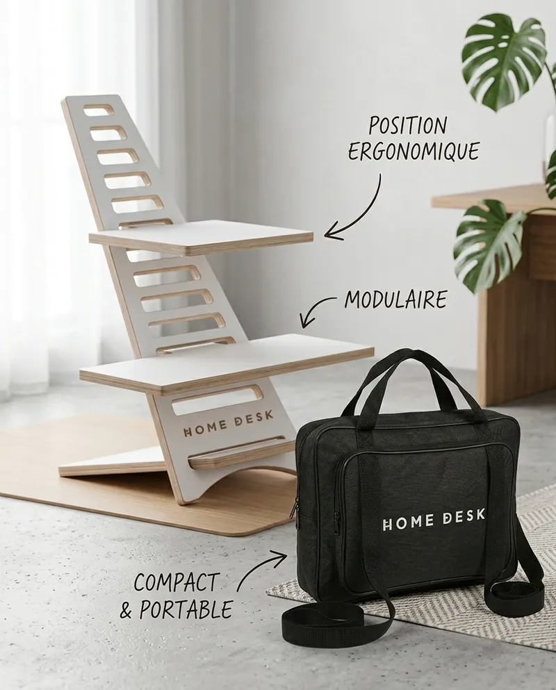
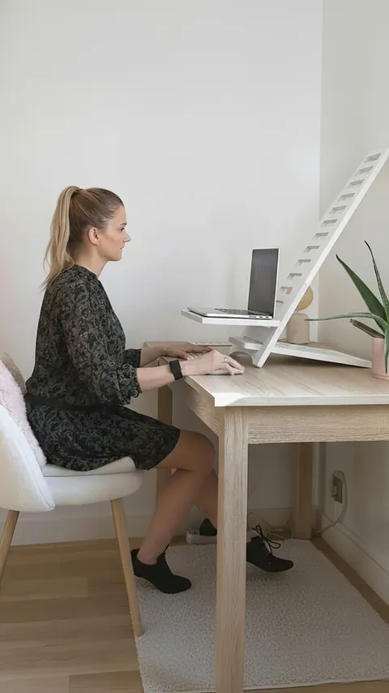
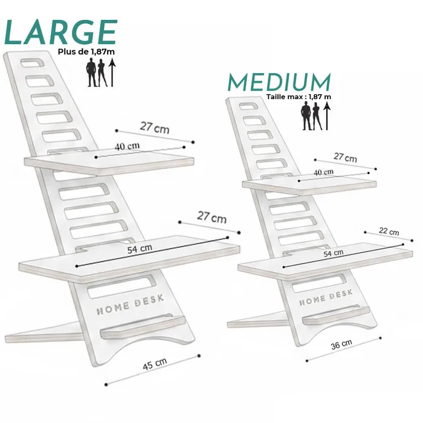
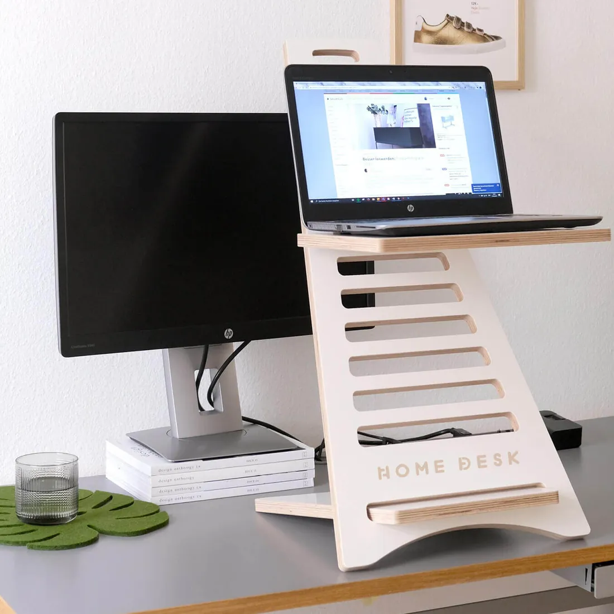

Le regard à la bonne hauteur
Votre écran remonte face à vous. Vous voyez la composition entière sans plonger la tête vers le bureau.
Plusieurs niveaux de hauteurHomeDesk est un objet minimaliste qui se pose sur votre bureau et en fait un poste assis-debout. Votre écran monte à hauteur des yeux, votre flow créatif ne s'interrompt plus.
À partir de 169 DT · Paiement à la livraison · Livraison gratuite

Vous soignez chaque pixel, chaque espacement. Et votre propre posture ?
Un espace bien composé devrait vous laisser bouger.
HomeDesk ne remplace pas votre bureau : il lui ajoute une hauteur. Assis le matin pour esquisser, debout l'après-midi pour itérer.



Votre écran remonte face à vous. Vous voyez la composition entière sans plonger la tête vers le bureau.
Plusieurs niveaux de hauteur
Quand une idée bloque, levez-vous et continuez. Changer de position, c'est aussi relancer l'énergie.
Assis ↔ debout en 5 secondesBlanc mat, silhouette ajourée, aucun câble : HomeDesk se fond dans un espace soigné au lieu de l'encombrer.
MDF stratifié blanc 18 mm · découpe CNC
Studio, agence, client : HomeDesk se démonte et voyage dans son sac. Votre poste debout vous suit.
Démontable · sac offert, valeur 85 DT💳 Vous ne payez qu'à la réception
Faites glisser pour comparer.

 AVANTAPRÈS
AVANTAPRÈS
4,9/5 de note moyenne
Je cherchais un standing desk qui ne casse pas l'esthétique de mon studio. Il est blanc, épuré, et je fais mes revues de maquettes debout.
Mon laptop est enfin à hauteur des yeux. Je garde ma tablette graphique sur le bureau et je passe debout l'après-midi.
Monté sans outil en quelques minutes. Je l'emporte chez mes clients dans son sac. On me demande toujours où je l'ai trouvé.





Blanc, ajouré, sans moteur ni câble : HomeDesk s'efface. Voici ses cotes exactes, pour le projeter sur votre bureau.
| Cote | Medium | Large |
|---|---|---|
| Recommandé | ≤ 1,87 m | > 1,87 m |
| Hauteur | 55 cm | 68 cm |
| Emprise (L × P) | 36 × 22 cm | 45 × 34 cm |
| Étagère écran | 40 × 27 cm | 40 × 27 cm |
| Étagère clavier | 54 × 22 cm | 54 × 27 cm |
| Étagère tél / tablette | — | Incluse |
| PC portable | jusqu'à 17" | jusqu'à 17" |
| Poids du support | 5 kg | 7 kg |
Il ne s'accorde pas avec votre espace ? Satisfait ou remboursé.
Moins de 1,87 m : Medium. Plus de 1,87 m : Large, avec une étagère pour tablette ou téléphone.

Jusqu'à 1,87 m · sac de transport + porte-clés

Plus de 1,87 m · étagère tél/tablette
Il ne quittera jamais votre bureau ? HomeDesk Essentiel dès 169 DT (sans sac, −30 DT).

Vous payez seulement à la réception. Ensuite, vous avez 3 jours pour le voir sur votre bureau, dans votre lumière, avec votre setup. Pas convaincu ? Vous êtes remboursé.
Medium si vous mesurez jusqu'à 1,87 m (hauteur 55 cm). Large au-delà de 1,87 m (hauteur 68 cm, avec une étagère pour tablette ou téléphone).
L'étagère haute (40 × 27 cm) accueille un PC portable jusqu'à 17 pouces. L'écran externe et la tablette restent sur votre bureau. La version Large ajoute une étagère dédiée à la tablette ou au téléphone.
Son emprise est de 36 × 22 cm (Medium) ou 45 × 34 cm (Large). Il est compact et ne remplace pas votre surface de travail.
HomeDesk est découpé à la CNC dans du MDF stratifié blanc de 18 mm d'épaisseur.
Non. Les pièces s'assemblent sans outil, en quelques minutes. Ensuite, changer de position prend 5 secondes.
Vous gardez le bureau que vous avez choisi et vous y ajoutez la position debout. C'est portable, sans moteur, et bien moins cher qu'un changement complet de bureau.
Vous payez à la livraison, en espèces. La livraison est gratuite partout en Tunisie. Vous avez ensuite 3 jours pour l'essayer : pas convaincu, vous êtes remboursé.
Gardez votre bureau. Ajoutez une hauteur. Payez seulement à la réception.
Dès 169 DT · Livraison gratuite · 3 jours pour essayer